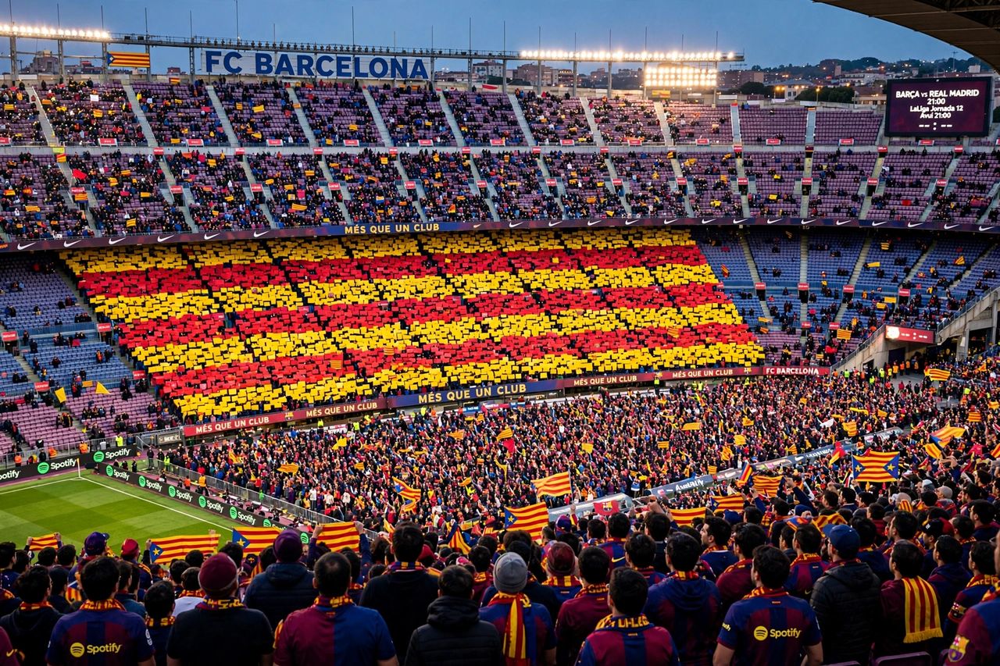

From Wikipedia, the free encyclopedia
| El Clásico | |
|---|---|
 A packed Camp Nou displaying a giant Catalan-flag mosaic before an El Clásico match | |
| Teams | FC Barcelona vs Real Madrid CF |
| First meeting | 13 May 1902 (Copa de la Coronación) |
| Competitions | La Liga, Copa del Rey, Supercopa, Champions League |
| Stadiums | Camp Nou (Barcelona); Santiago Bernabéu (Madrid) |
| Top scorer | Lionel Messi (26 goals) |
El Clásico (Spanish for "The Classic") is the name given to football matches between Spanish rivals FC Barcelona and Real Madrid. First played in 1902, the fixture is one of the most watched annual sporting events in the world, drawing a global television audience of hundreds of millions. Beyond sport, the rivalry carries cultural and political weight: Madrid is the capital and seat of the Spanish state, while Barcelona is the capital of Catalonia, and the clubs have long been seen as sporting expressions of Spanish and Catalan identities respectively.
The rivalry intensified during the Franco era, when Catalan language and symbols were suppressed and Barcelona adopted its motto més que un club ("more than a club"). Controversial transfers — most famously Alfredo Di Stéfano in the 1950s and Luís Figo's move from Barcelona to Madrid in 2000, greeted on his return by a pig's head thrown from the crowd — deepened the enmity. In the 21st century the fixture reached new heights during the years when Lionel Messi and Cristiano Ronaldo faced each other, and the touchline rivalry between Pep Guardiola's Barcelona and José Mourinho's Madrid produced a string of combustible encounters between 2010 and 2012.
The two clubs are Spain's most successful, and their head-to-head record in official competition is closely balanced after more than 250 meetings. Messi is the fixture's record scorer with 26 goals; Sergio Ramos and others have accumulated record appearance totals in the modern era. Meetings in European competition include the 2002 and 2011 Champions League semi-finals, both won by the eventual champions. The women's fixture, between Barcelona Femení and Real Madrid Femenino, set a world record attendance for women's club football at Camp Nou in 2022.
Categories: El Clásico | FC Barcelona | Real Madrid CF | Football derbies in Spain